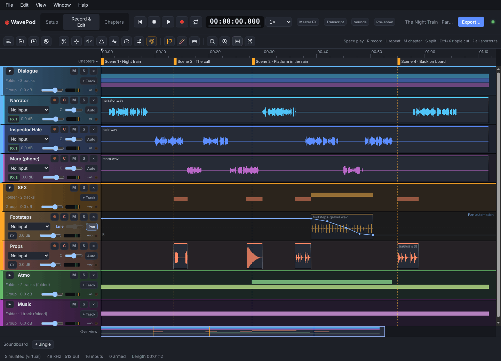
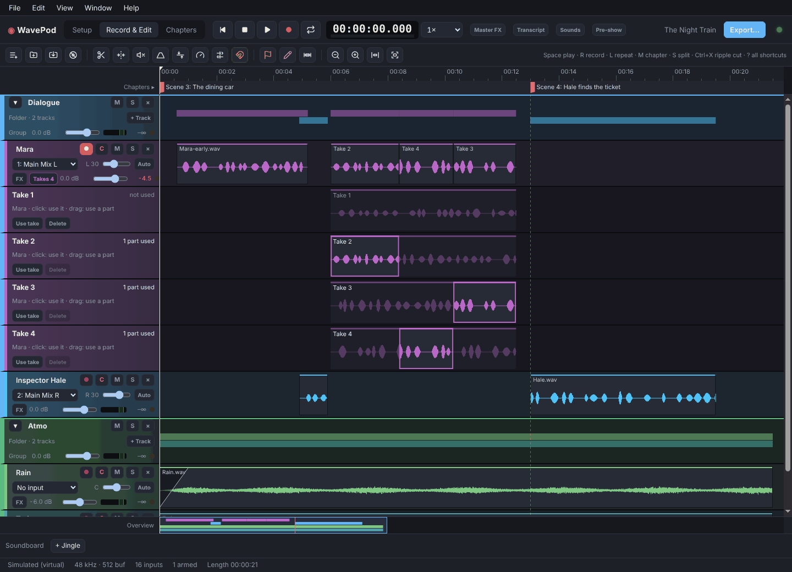
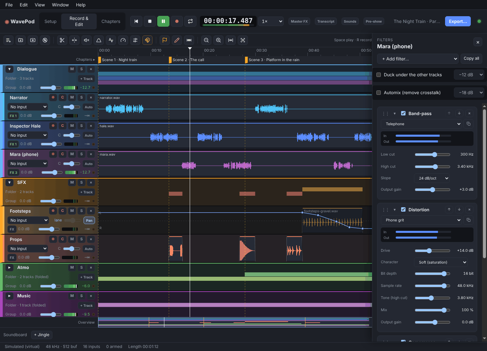
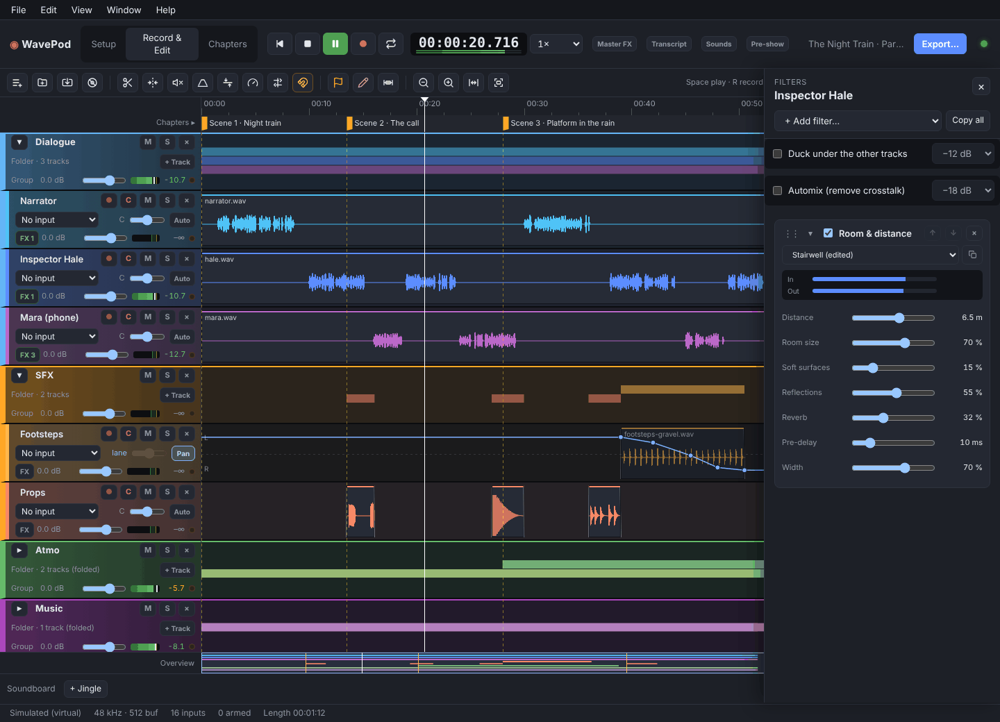
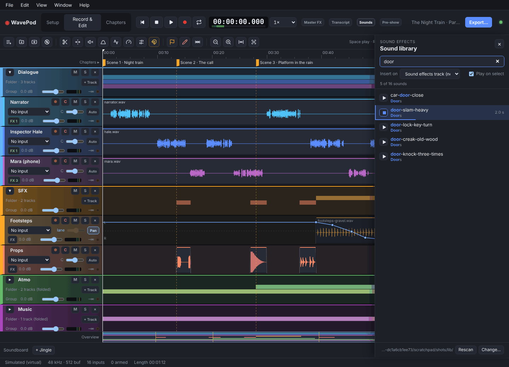
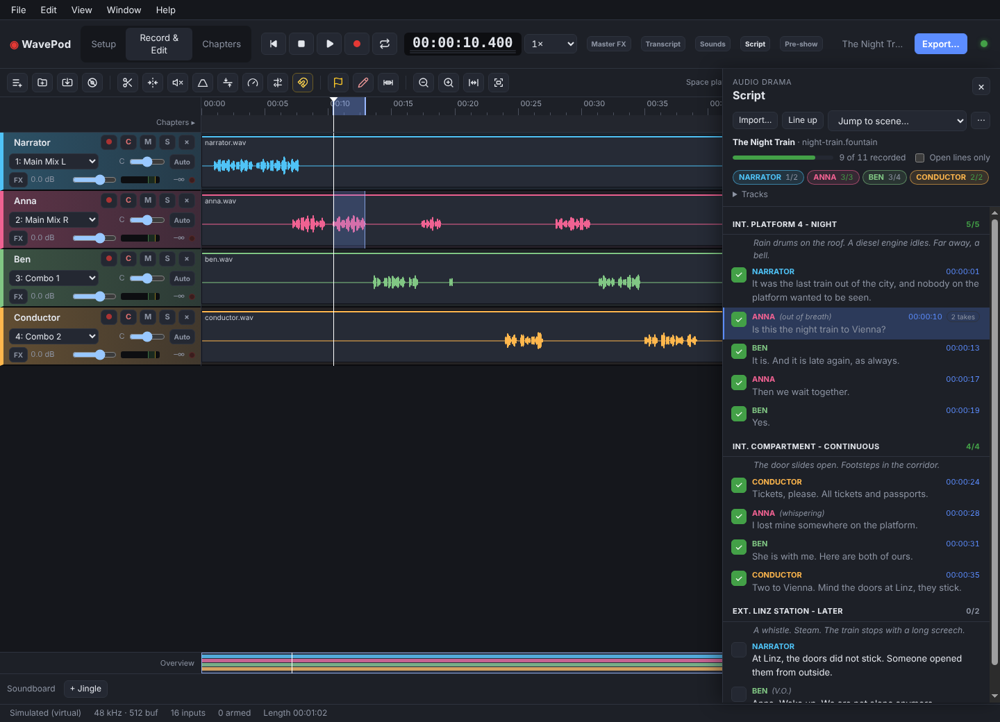
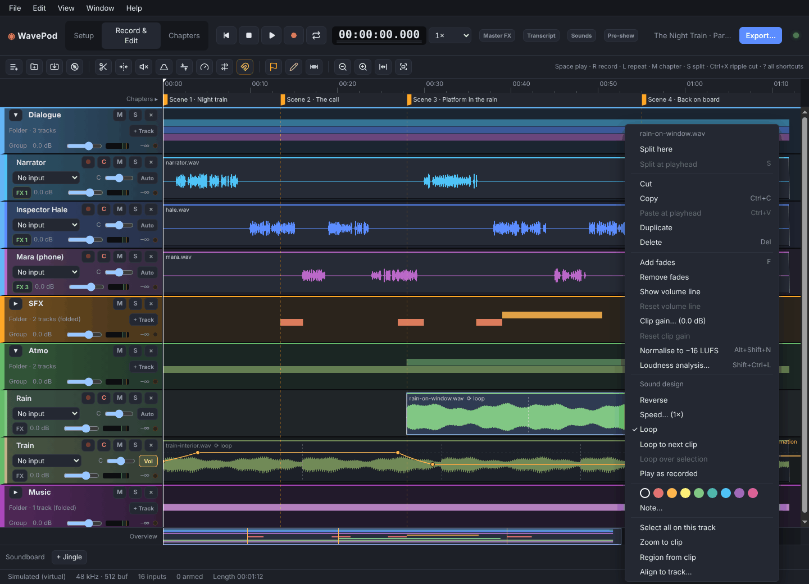
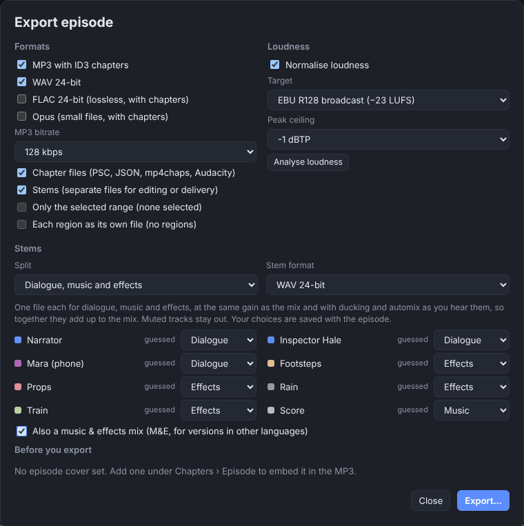

WavePod is a free studio for fiction. Import the script and tick off every
line your cast records, loop a line until it's right and splice the best take together, turn a voice into
a phone call, a robot or a ghost in one click, put it in a stairwell six
metres away, walk the footsteps from left to right, lay rain from your
sound library and deliver dialogue, music and effects stems. Fully Open
Source, on Linux, Windows and macOS.
WavePod is the multitrack studio made for talking. Plug in your
RØDECaster or USB interface, get a track for every speaker in one
click, edit the episode by editing its transcript, and go from first
word to finished MP3 with chapters. Free, fully Open Source, on
Linux, Windows and macOS.
This is a live demo. Mara is on the phone, rain loops on the Atmo track and the footsteps
pan from left to right. Press M or click to mark a new scene, and move over the tracks to scrub.
This is a live demo. Press M or click to drop a chapter marker,
hold 1–3 for a cough button, and move over the tracks to scrub.
RØDECaster Pro IIRØDECaster DuoZoom PodTrakFocusrite ScarlettClass-compliant USBVST3 plug-insMIDI controllersOSC remotesElevenLabsCore AudioWASAPI · ASIOALSA · PulseAudio · JACK
25voice effects, from phone to ghost
18places with real distance
−23 LUFSEBU R128, ready for radio
€0forever, MIT licensed
16input channels at once
3platforms, one app
−16 LUFSloudness, on target
€0forever, MIT licensed
Made for fiction
Sound design for stories. Without a music DAW.
A phone call, a robot, a ghost. One click.
25 ready-made voice effects: telephone, mobile, old radio, walkie-talkie,
megaphone, next room, underwater, robot, alien, giant, demon, chipmunk, ghost,
flashback and more. Each one is a stack of ordinary filters, so every value stays
editable. Put it on a whole character's track or on a single line
with clip filters. Pick one above to see what it does.
Rooms you can walk away in
Room & distance puts a voice into one of 18 places, from close to
the mic, car and stairwell to cave, forest and street. Turn up the
Distance in metres and the voice gets quieter, loses highs and bass,
and the room takes over, as if the speaker walked away.
Your sound library, searchable
Point WavePod at your sound effects folder, type door creak, pre-listen
with the arrow keys and drop it on a track. Atmospheres loop to fill a scene.
Inspector Hale
pre-rollpunch in · Shift+Rpost-roll
Fix one line. Keep the scene.
An actor fluffed a line? Select it and press Shift+R. WavePod plays
a few seconds of the scene before it, so the actor hears the cue and comes in on
time, records only the selected line and crossfades it into the scene. The old
version stays a take you can switch back to with T.
LR
Pan & volume automation
Draw lanes on any track to walk footsteps past the listener, pull an
atmosphere down under a scene or swell the music for the cliffhanger.
▾ Dialogue
▾ SFX
▸ Atmo
▸ Music
Track folders
Dialogue, SFX, Atmo and Music in one click, each with its own mute, solo and
volume. Fold away what you're not working on.
Reverse
Speed 0.75×
Loop
Sound design on clips
Reverse a swell, slow a door down like tape, loop rain or room tone over a
whole scene. Right-click a clip, done.
The Night TrainLine up
NARRATORANNABENCONDUCTOR
INT. PLATFORM 4 - NIGHT
NARRATORIt was the last train out of the city…
ANNAIs this the night train to Vienna?2 takes
BENIt is. And it is late again.
INT. COMPARTMENT
CONDUCTORTickets, please.
The script beside the timeline. Every line ticked off.
Import the script as plain text (ANNA: line), Fountain, Final Draft or PlotGod.
WavePod lists every line scene by scene, in the colour of the character's track,
and counts what each actor still has to record. Press Enter in the session
and the line is ticked off at the playhead, the next one is ready. Or record first and
press Line up: WavePod finds every line in the transcript, takes and all.
Click a line to hear its take, click a scene to jump there.
Comp
Take 1
Take 2
Take 3
Every take kept. Splice the best of them.
Select a line and press Alt+Shift+R: WavePod plays a two-second run-up,
then loops the line while your actor reads it again and again. Every pass
becomes a take, stacked in lanes under the track. Click a take to hear it in
the scene, or swipe across the best words of each one to splice them into a
single performance. Nothing is thrown away, and T flips through the takes.
Mix
DDialogue
MMusic
EEffects
M&EFor other languages
Stems for broadcasters and festivals
Export dialogue, music and effects as separate files in one pass, plus an
M&E mix for versions in other languages. They add up exactly to your mix,
ducking included, and the mix lands on −23 LUFS for radio or −16 for podcast apps.
Dialogue
Music
Music that makes room
Tick Duck under the other tracks on the score and it dips while
anyone speaks, then swells back in the pauses. Live and in the export.
16 inputs at onceCrash-safe takesLoop recordingPunch-in with pre-rollMusic duckingNoise reductionDe-esserVST3 plug-insEdit by transcriptScene & chapter markersTape scrubbingWAV · FLAC · MP3 · OpusAI agents via MCP
And the whole studio under it
Record a full cast at once on a RØDECaster or any USB interface, one
crash-safe track per actor. Clean up with noise reduction and a leveler,
cut dialogue in the transcript, mark scenes while you record and play your
VST3 plug-ins in the same filter stack.
Made for talking, not for music
Everything a podcast needs. Nothing it doesn't.
Every microphone on its own track
Records all 16 multitrack channels of a RØDECaster Pro II, and works with
RØDECaster Duo, Zoom PodTrak, Focusrite and other class-compliant interfaces.
Known devices are recognised and their inputs named for you, so
Create 8 speaker tracks is one click.
Recording you can trust
Crash-safe WAV, one file per track, written on its own thread. If the
computer goes down mid-show, the take is recovered when you reopen it.
BeforeAfter
Studio-grade audio enhancement, built in
Everything you used to pay an online post-production service for,
right on your own machine: an adaptive leveler evens out loud and
quiet speakers, noise reduction takes out fans and hum without a
"learn noise" step, and the export lands on −16 LUFS without
clipping. One click on Voice chain sets up high-pass,
de-esser and leveler for a speaker. No uploads, no waiting in a
queue, no per-hour credits.
Editing for podcasters
Split, trim, fade, ripple cut across all tracks, crossfades, volume lines,
cough buttons, tape-style scrubbing, and cutting by deleting words in the
transcript.
Filters that sound like radio
EQ, gate, compressor, de-esser, limiter, noise reduction and Dynamics,
with speech presets. Your VST3 plug-ins run in the same stack, safely in
their own process.
−16.0LUFS
Loudness, handled
EBU R128 analysis and normalisation to −16 LUFS or your own target,
without the true peak going over.
Set chapter markers while recording with M, add titles, links
and images later, and export everything your podcast host wants in one go.
Soundboard & controllers
Jingles on keys 1–9, MIDI pads on your RØDECaster,
and OSC remotes for the whole transport.
you ›claude ›Added High-pass 90 Hz and EQ −3 dB @ 250 Hz on Guest.
AI agents, if you want them
An opt-in local MCP server lets Claude and other AI agents build filter
stacks, apply a voice chain and read tracks, markers and loudness. Off by
default, and it only listens on your own machine.
Text-based editing
Edit your podcast like a document.
Cut your takes like a script.
Transcript
Click a word to cut it, or drag across words.
A transcript of every trackTranscribe the episode with ElevenLabs Scribe, using your own API
key. Every word knows its time, and the text stays in place through
every cut, move and trim. Click a word and the playhead jumps there;
during playback the current word lights up.
Delete text, cut audioDrag across a sentence and press Delete, or click a single
word and delete just that one. WavePod ripple-cuts it from every track
at once, so the conversation stays in sync and the gap closes.
Pauses and hesitations, gone in one clickClean up finds long pauses and shortens them, keeping the
breaths, and lists every “um”, “uh” and “ähm” from the transcript. Listen to
each one, untick what should stay, apply the rest.
Fix a word in the speaker's voice ExperimentalDouble-click a word and type what should have been said. WavePod
clones the speaker's voice from their own track (with their permission),
says the new words with ElevenLabs speech synthesis, matches the level
and splices them in.
Change words says new words in the speaker's cloned voice.
Transcription and speech synthesis use your own
ElevenLabs account. Audio only leaves your
computer when you start one of them; everything else in WavePod works offline.
Take the tour
From soundcheck to export
From first take to stems








Dialogue, SFX, Atmo and Music folders, scene markers, and footsteps panned across with an automation lane.
Every speaker on a track of their own, with chapters, edit marks and the soundboard.
Fully Open Source
Yours to use, read, change and share.
All of WavePod's code is on GitHub under the MIT License. No account,
no subscription, no telemetry. Bug reports and pull requests are welcome.
The builds are not code-signed yet. On macOS, right-click the app and
choose Open the first time; on Windows, choose
More info › Run anyway if SmartScreen asks. On Ubuntu and
Debian, install the .deb (sudo apt install ./WavePod-*.deb);
an AppImage for other distributions is on the releases page.
Older versions and release notes are on the
releases page.